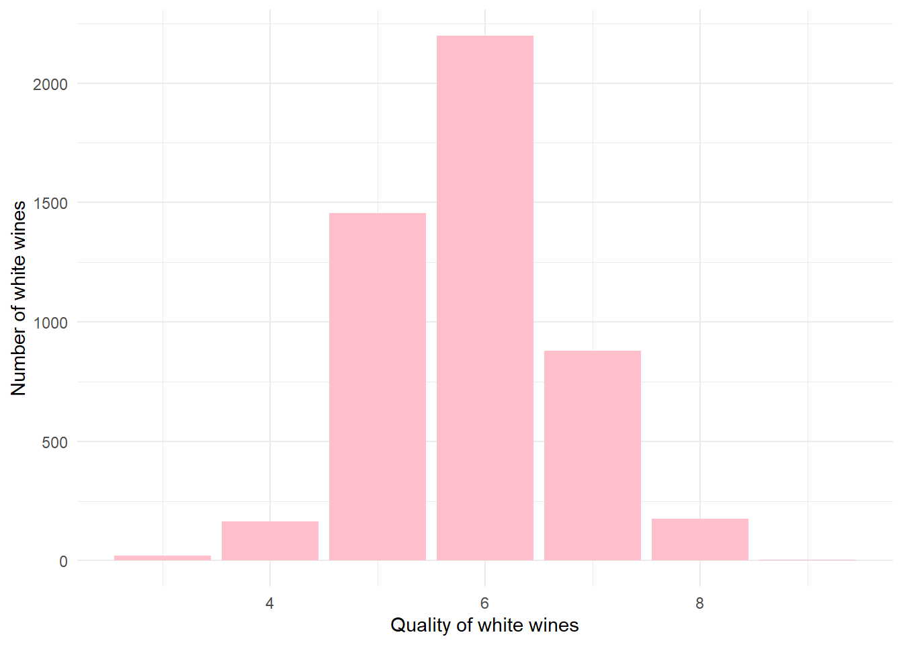

Min. 1st Qu. Median Mean 3rd Qu. Max.
3.000 5.000 6.000 5.878 6.000 9.000
Quality 점수별 수치
library(ggplot2)theme_set(theme_minimal())ggplot(wine,aes(quality)) +geom_histogram(stat="count") +xlab("Quality of white wines") +ylab("Number of white wines") +geom_bar(fill="pink")
Warning: Ignoring unknown parameters: binwidth, bins, pad

# 평균 Quality 6점 thus, 7점부터 Good Wine
# rating 변수 추가 생성wine$rating <-ifelse(as.integer(wine$quality) >6, 1, 0)table(wine$rating)
0 1
3838 1060
summary(wine)
fixed.acidity volatile.acidity citric.acid residual.sugar
Min. : 3.800 Min. :0.0800 Min. :0.0000 Min. : 0.600
1st Qu.: 6.300 1st Qu.:0.2100 1st Qu.:0.2700 1st Qu.: 1.700
Median : 6.800 Median :0.2600 Median :0.3200 Median : 5.200
Mean : 6.855 Mean :0.2782 Mean :0.3342 Mean : 6.391
3rd Qu.: 7.300 3rd Qu.:0.3200 3rd Qu.:0.3900 3rd Qu.: 9.900
Max. :14.200 Max. :1.1000 Max. :1.6600 Max. :65.800
chlorides free.sulfur.dioxide total.sulfur.dioxide density
Min. :0.00900 Min. : 2.00 Min. : 9.0 Min. :0.9871
1st Qu.:0.03600 1st Qu.: 23.00 1st Qu.:108.0 1st Qu.:0.9917
Median :0.04300 Median : 34.00 Median :134.0 Median :0.9937
Mean :0.04577 Mean : 35.31 Mean :138.4 Mean :0.9940
3rd Qu.:0.05000 3rd Qu.: 46.00 3rd Qu.:167.0 3rd Qu.:0.9961
Max. :0.34600 Max. :289.00 Max. :440.0 Max. :1.0390
pH sulphates alcohol quality
Min. :2.720 Min. :0.2200 Min. : 8.00 Min. :3.000
1st Qu.:3.090 1st Qu.:0.4100 1st Qu.: 9.50 1st Qu.:5.000
Median :3.180 Median :0.4700 Median :10.40 Median :6.000
Mean :3.188 Mean :0.4898 Mean :10.51 Mean :5.878
3rd Qu.:3.280 3rd Qu.:0.5500 3rd Qu.:11.40 3rd Qu.:6.000
Max. :3.820 Max. :1.0800 Max. :14.20 Max. :9.000
rating
Min. :0.0000
1st Qu.:0.0000
Median :0.0000
Mean :0.2164
3rd Qu.:0.0000
Max. :1.0000